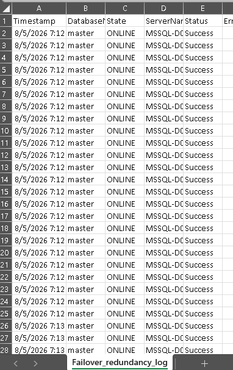

# Define file paths
$input_file = "D:\anurag_dba\mysql\scripts_new.sql"
$output_file = "D:\anurag_dba\mysql\import_log_ps.csv"
$log_path = "D:\anurag_dba\mysql\raw_log_ps.txt"
# 1. Run the MySQL command using Get-Content (PowerShell input method)
# The output will be tab-separated because of -B (Batch mode)
Get-Content "$input_file" | ./mysql -u anurag_dba -h 192.168.1.10 -P 3306 -p --force -v -v -B agblog *>&1 > "$log_path"
# 2. Read the raw log, add headers, and convert tabs to commas
"'#', 'Time', 'Action', 'Message', 'Duration / Fetch'" | Out-File -FilePath $output_file -Encoding UTF8
Get-Content $log_path | ForEach-Object {
$line = $_ -replace "`t", ","
$line = "'$line'"
Add-Content -Path $output_file -Value $line -Encoding UTF8
}
# 3. Clean up the temporary raw log file
Remove-Item $log_path
Write-Host "CSV log file created successfully at $output_file"
exit